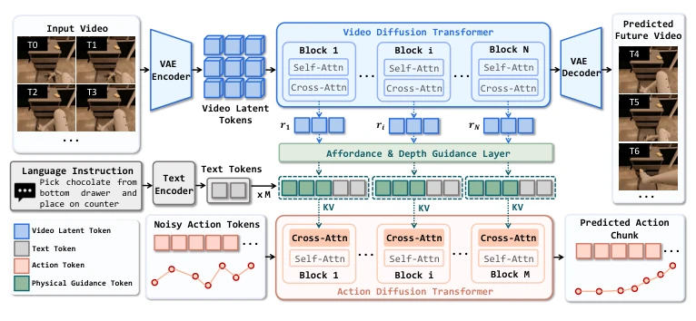
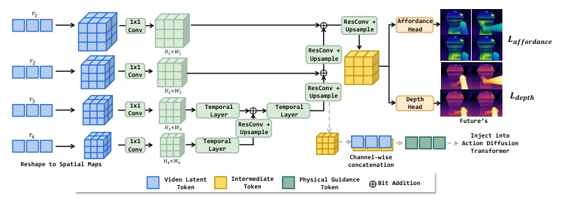
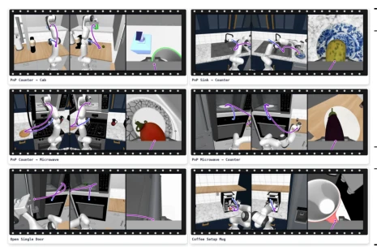
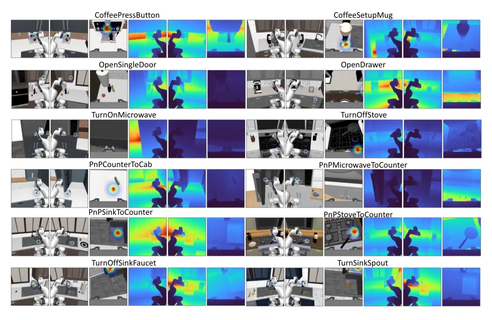
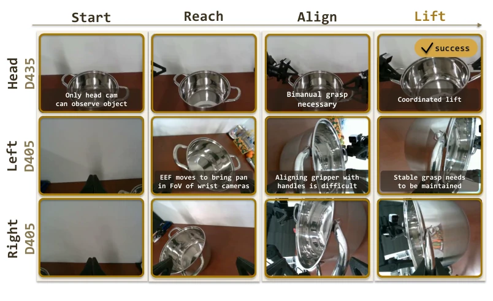
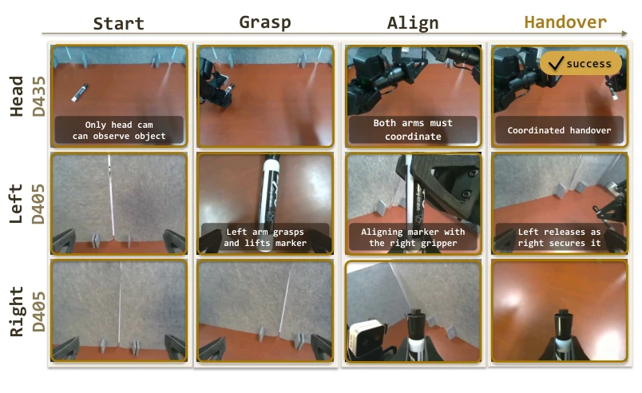
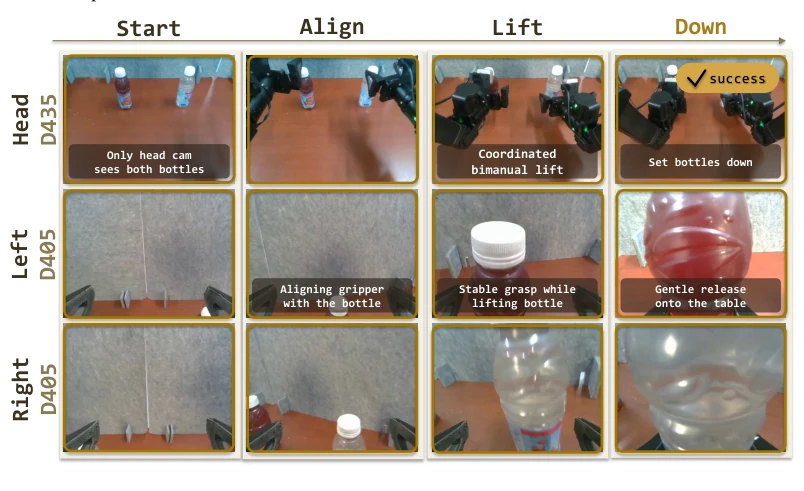

Figure 1: Overview of DeVA compared with VLA and coupled VAM. VLA directly maps image- language inputs to actions without explicit dynamics modeling, while coupled video-action models jointly process video and action tokens in a shared representation. DeVA decouples video dynamics modeling from action prediction with physical guidance, enabling efficient robot policy learning.

Figure 2: Overview. DeVA decouples video dynamics modeling and action prediction. The action stream attends to layer-wise video features through cross-attention to produce robot action chunks.

Figure 3: Physical guidance module. The module aggregates multi-level video features and decodes them into affordance and depth maps, which are then converted into physically grounded tokens and injected into the action transformer head to support action prediction.

Figure 4: RoboCasa task rollout examples.

Figure 9: Visualization of physical guidance across representative manipulation examples. Affordance maps highlight task-relevant interaction regions, while relative-depth maps capture the near-to-far geometric structure of each scene.

Figure 10: Keyframes of the Lift Pot task, including coordinated approach, synchronized grasping, stable lifting, and placement.

Figure 11: Keyframes of the Handover Marker task, highlighting grasping, precise bimanual transfer, and stable placement.

Figure 12: Keyframes of the Pick Up Diverse Bottles task, including coordinated dual-arm grasping, lifting, and stable placement.